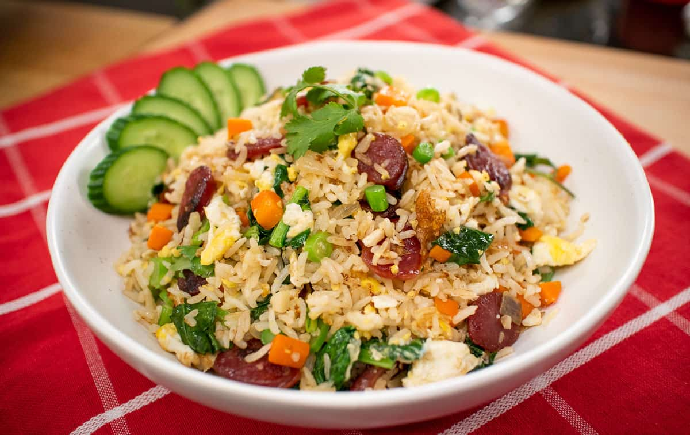

Fried Rice with Chinese Sausage

Description
Easy to make fried rice, no an egg did not fry this rice
Ingredients
- Day old rice
- Chinese sausage
- Garlic
- Cooking oil
- Stir fry vegetable mix
- Maggi seasoning or soy sauce
- MSG (optional)
Steps
- Chop Chinese sausage into bite size pieces along with some garlic
- Add some cooking oil to the wok, let it warm up, throw in the garlic and sausage
- After a while add your vegetable mix and stir fry until they are done to your liking. Might have to stagger different veggies if you like some cooked more than others
- Next add the rice, make sure it is a day old rice lest you want mushy rice
- Add Maggi (or soy sauce) to the wok, keep stir frying until done
- Optional, sprinkle some MSG on top while stir frying
Home